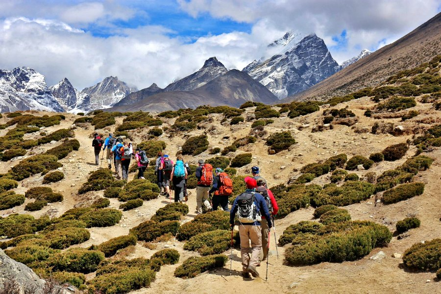
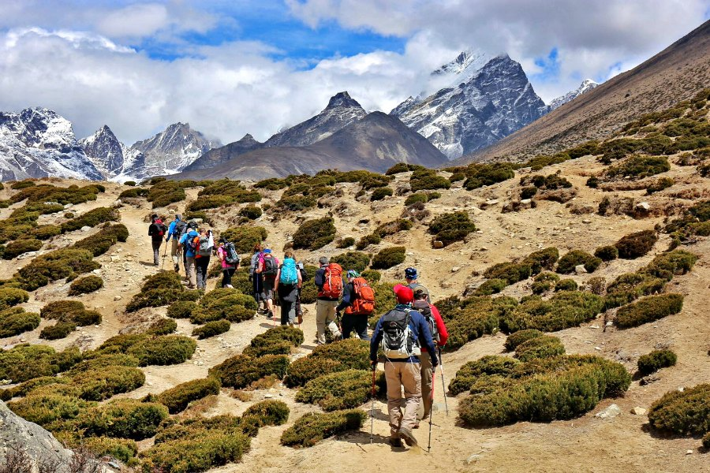

- English
- |
- 日本語
 


エベレストベースキャンプは、エベレスト山の反対側の2つのベースキャンプのいずれかです。 南ベースキャンプ（5,364m ）と北ベースキャンプ（5,150m）があります。 エバーストベースキャンプに達するためにネパールで過ごす生涯の冒険に乗りなさい。
カトマンズからルクラへ飛行機で行きます。山と谷を散策していただき、ネパールの茶屋で休憩し、 有名なシェパの伝統と文化を学び、エキゾチックなカトマンズで過ごす。
北ベースキャンプへの訪問は、現在、中国政府からの要請を元になっています。 これにより、ローザと言いうところの旅行会社を経由して霧、 運転手、ガイドの雇用パッケージツアーの一環としてアレンジされた霧ができます。


非常に多くの異なる風景を組み合わせたトレッキングはほとんどありません アンナプルナ・ベースキャンプ・トレックのような短期間で、7,000と8,000メートルのピークの近くにあなたを連れて行きます。アンナプルナベースキャンプトレッキングはアンナプルナ地域で最も人気のあるトレッキングの一つです。 トレイルは、ほとんどの時代にアンナプルナ山脈のある田んぼの田んぼ、青々とした紅蓮林、高地の景観に沿っています。 4130 mのアンナプルナベースキャンプの設定はユニークで信じられないほど壮大ですが、 アンナプルナI（8091 m）、アンナプルナ・サウス（7219 m）の壮大なピークに囲まれ、 Machapuchhre（6993メートル）とHiunchuli（6441メートル）。アンナプルナ・ベース・キャンプ・トレックは、あなたの旅程と歩いている日の長さによって7日から12日かかります。 ここに紹介されている旅程はナヤプル（ポカラから車で1時間30分）から北にゴレパニまで、プーンヒルで有名な視点から12日間です。 Ghorepaniから東へChomrongへ、北はModi Kola Valleyに入り、ベースキャンプまで進みます.4多くの人がNayapul-Ghorepani-Ghandruk-Nayapulサーキットをトレッキングしています。これは非常に有益です。このトレッキングは子供たちにも簡単に行えます。あなたはJhinu Dandaを経由して帰ることができ、疲れた筋肉を楽しい温泉で十分に休息させることができます。 あなたの帰りにGhandrukまたはLandrukのGurung村の1つを訪問する価値があります。


カンチェンジュンガサーキットトレックはネパールで最も有名なトレッキングの一つです。 毎年何千人ものトレッカーがカンチェンジュンガサーキットトレッキングにハイキングしています。 カンチェンジュンサーキットトレックは、制限されたトレッキングエリアです。 カンチェンジュンガ地区をトレッキングするには、 カンチェンジュンガを通過するのに必要な許可を得るには、地元のガイドと少なくとも2人のトレッカーが必要です。 カンチェンジュンガサーキットトレッキングは、エベレストベースキャンプトレックやアンナプルナベースキャンプトレックほど人気がありません。 それは混雑しておらず、まだ遠隔地であることを意味します。 カンチェンジュンガ地域をトレッキングしながら、伝統的なネパールの文化、食べ物、ライフスタイルを体験することができます。 カンチェンジュンガトレッキングはティーハウストレッキングです。 ティーハウスのトレッキングには、さまざまな種類の食べ物が少ない小さなロッジがあります。 北部ベースキャンプか南部ベースキャンプのどちらかのトレッキングでカンチェンジュンガを訪れることができます。 同じ旅行で両方を選ぶと、その風景の多様性と不規則性を考えると全く難しいことです。


ネパールの孤立した地域であるアッパームスタングには、洞窟、ハイキング、王室があります。 アッパームスタングは制限されたエリアであり、1992年まで外国人の訪問者が王国に入ることは禁じられていた。 アッパームスタングは、1992年まで制限された非武装地帯であったため、世界で最も保存された地域の1つになっています。 人口の過半数はまだ伝統的な宗教的言語を話している。 チベット文化は、外界からの地域の相対的な隔離によって維持されている。 一般的に、アッパームスタングを訪れる最も良い時期は3月から11月初めです。 アッパームスタングは、ネパールで最も興味深く絵のような場所の一つと考えられています。